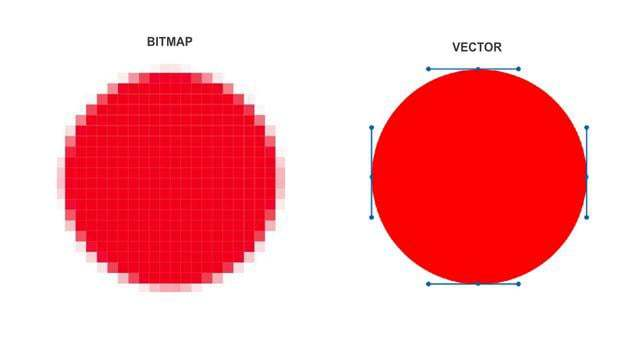

CSS
CSS(Cascading Style Sheets)는 HTML로 작성된 문서를 쓰기 위한 스타일 시트 언어입니다.
HTML은 문서의 골격을 이룬다면 CSS는 그 골격에 맞는 디자인 작업 언어라고 생각하면 됩니다.
CSS 선택자
CSS 선택자를 통해 요소를 선택하고 속성을 줄 수 있습니다.
기본 선택자
| 종류 | 예시 | 이름 |
|---|---|---|
| 태그 선택자 | p {color: #fff} | p태그를 선택해서 글씨 색을 하얀색으로 설정합니다. |
| 클래스 선택자 | .class {color: #fff} | class 클래스를 선택하여 글씨 색을 하얀색으로 설정합니다. |
| 아이디 선택자 | #id {color: #fff} | id 아이디를 선택하여 글씨색을 하얀색으로 설정합니다. |
| 그룹 선택자 | p, #id {color: #fff} | p 태그와 아이디를 선택하여 글씨 색을 하얀색으로 설정합니다. |
| 전체 선택자 | * {color: #fff} | 전체 태그를 선택하여 글씨 색을 하얀색으로 설정합니다. |
- id 선택자
- 하나의 태그만 식별하기 위한 선택자입니다.
- 하나의 태그에서 하나만 사용할 수 있습니다.
- "#"으로 표시합니다.
- class 선택자
- 여러개의 태그를 식별하기 위한 선택자입니다.
- 하나의 태그에서 여러개를 사용할 수 있습니다.
- "."으로 표시합니다.
링크 가상 클래스
| 종류 | 예시 | 이름 |
|---|---|---|
| :link | a:link {color: #fff} | 방문하지 않은 링크의 글씨 색을 하얀색으로 설정합니다. |
| :visit | a:visit {color: #fff} | 방문한 링크의 글씨 색을 하얀색으로 설정합니다. |
| :hover | a:hover {color: #fff} | 링크 위에 마우스를 올려놓았을 경우 글씨색을 하얀색으로 설정합니다. |
| :active | a:active {color: #fff} | 링크가 활성화 되었을 경우 글씨 색을 하얀색으로 설정합니다. |
폼 관련 선택자
| 종류 | 예시 | 이름 |
|---|---|---|
| :checked | input:checked {color: #fff} | input 태그가 체크되었을 때 글씨 색을 하얀색으로 설정합니다. |
| :focus | input:focus {color: #fff} | 태그에 초점이 맞추어 졌을 때 글씨 색을 하얀색으로 설정합니다. |
| :enabled | input:enabled {color: #fff} | input 태그가 사용 가능하면 글씨색을 하얀색으로 설정합니다. |
| :disabled | input:disabled {color: #fff} | input 태그 가 사용 가능하지 않으면 글씨 색을 하얀색으로 설정합니다. |
속성 선택자
| 종류 | 예시 | 이름 |
|---|---|---|
| [name] | a[herf] | a태그의 속성 중에 href가 있으면 선택합니다. |
| [name="value"] | a[herf="#header"] | a태그 href속성의 값이 '#header'이면 선택합니다. |
| [name~="value"] | a[herf~="web"] | a태그 href속성의 값이 'web'을 포함한 요소를 선택합니다. |
| [name|="value"] | a[herf|="web"] | a태그 href속성의 값이 'web'이거나 'web-'으로 시작하는 요소를 선택합니다. |
| [name^="value"] | a[herf^="web"] | a태그 href속성의 값이 'web'으로 시작하는 요소를 선택합니다. |
| [name*="value"] | a[herf*="web"] | a태그 href속성의 값이 'web'으로 포함되어 있는 태그를 선택합니다. |
| [name$="value"] | a[herf$="com"] | a태그 href속성의 값이 'com'으로 끝나는 태그를 선택합니다. |
CSS 색상
CSS를 통해 색상을 표현하는 방법은 4가지가 있습니다.
16진수 표기법
웹문서데서 색상을 표현하는 방법은 16진수로 표현하는 방법입니다. 두자리씩 묶어서 #RRGGBB 형식으로 표현하며, RR은 빨간색, GG는 초록색, BB는 파란색의 양을 표현합니다. 각 색상의 하나도 섞이지 않았음은 00부터 가득 섞였음은 FF까지 사용할 수 있습니다.
RGB와 RGBA
웹 문서에서 색상을 표현하는 rgb(255,255,255)는 십진수를 이용하여 표현합니다. 색이 하나도 섞이지 않았을 때에는 0으로 표시하고, 가득 섞였을 때에는 255로 표현합니다. 숫자는 색상의 양을 나타내고 a는 투명도(alpha)를 나타냅니다. 투명도 0과 1사이로 표현합니다.
HSL와 HSLA
웹문서에서 색상을 표현하는 HSL은 색상(hue), 채도(saturation), 밝기(lightness)를 나타냅니다.색상은 둥글게 배치한 색상환으로 표시하고 0도와 360도에는 빨간색, 120도에는 초록색, 240도에는 파란색이 배치됩니다. 채도가 0%이면 회색톤, 100%이면 순색으로 표시됩니다. 밝기는 0%에서 가장 어둡고 100%에서 가장 밝습니다.
색상 이름 표기법
색상이름을 이용하여 색을 표현할 수 있습니다. 가장 기본적인 16가지를 포함하여 216가지의 색상 이름 표기법이 있습니다.
aqua, black, blue, fnchsia, gray, green, lime, maroon, navy, olive, purple, red, sliver, teal, white, yellow
비트맵과 벡터
컴퓨터 분야에서 디지털 이미지를 저장하는 데 쓰이는 이미지 파일 포맷 또는 메모리 저장 방식 중 하나다.

(이미지 출처 https://blog.naver.com/jajakseoul/220910670042)
- 비트맵: 작은 점들로써 그림을 이루는 이미지 파일 형식.
GIF, JPEG, PNG, TIFF, BMP, PCT, PCX 등 파일 형식이 있으며, 보통 폰트나 이미지에서 사용된다. 비트맵은 그래픽을 래스터(raster) 방식으로 저장하며, 비트맵에 대응되는 메타파일(metafile)은 벡터(vector) 방식으로 그래픽을 저장한다. - 벡터: 수학적 공식에 의해 처리되는 이미지. 점과 베지어 커브를 통해서 외곽선을 만들고 그 내부에 색상이나 패턴을 적용시켜 표현한다.
이미지 크기는 비트맵에 비해 작고 이미지의 질을 손상시키지 않으면서 확대나 회전 등의 다양한 방법으로 조작할 수 있다. 이때의 라인은 스크린 상에서와 프린트할 때 모두 깨끗하게 유지된다. 대표적인 프로그램으로 어도비(Adobe)사에서 나온 일러스트레이터가 있다.
CSS 선언
HTML 문서에 스타일 선언하는 방법은 3가지 방법이 있습니다.
- 내부 스타일(Internal Style Sheet): head 태그 안에 선언하는 방법
- 외부 스타일(External Style Sheet): 외부 파일로 연결하는 방법
- 인라인 스타일(Inline Style Sheet): 태그에 직접 연결하는 방법
<!DOCTYPE html>
<html lang="en">
<head>
<meta charset="UTF-8">
<title>Document</title>
<!-- 내부 스타일 -->
<style>
h1 {color: #fff}
</style>
<!-- 외부 스타일 -->
<link rel="stylesheet" href="경로">
</head>
<body>
<!-- 인라인 스타일 -->
<h1 style="color: #fff"></h1>
</body>
</html>
상대주소 절대주소
이미지 또는 파일의 경로를 설정하는 방법은 상대주소와 절대주소가 있습니다.
- 상대주소: 현재 디렉토리(비교 대상)를 기준으로 작성된 경로
- 절대주소: 최초의 시작점으로 경유한 경로를 전부 기입하는 방식 .최상위 디렉토리가 반드시 포함 된 경로를 의미
상대주소: ../a.html => 상위 폴더에 있는 a.html 파일
절대주소: C:\Atom\a.html => C:디스크 안에 있는 Atom폴더 안에 있는 a.html파일
이미지 표현 방법
웹 문서에 이미지를 표현하는 방법은 img 태그와 background를 통해 설정할 수 있습니다.
- img 태그로 표현하는 방법: 이미지가 의미가 있는 경우(로고)
- background로 표현하는 방법: 이미지가 의미가 없는 경우(장식)
이미지 스프라이트
아이콘 또는 장식을 위한 이미지 요소들은 스프라이트 기법을 활용하여 파일의 사이즈를 최소화하고 효율성을 높일 수 있습니다.
- 여러번의 서버 요청을 한 번으로 줄일 수 있습니다.
- 이미지 수정이나 관리가 간편합니다.
- 웹 접근성을 준수하기 위해서 IR 효과를 설정해야 합니다.
-
IR 효과
IR 기법은 이미지 대체텍스트를 제공하기 위한 CSS 기법으로 다양한 CSS 기법을 사용하여 이미지 대체 텍스트를 제공할 수 있습니다.
Phark Method
의미있는 이미지의 대체 텍스트를 제공하는 경우: 이미지로 대체할 엘리먼트에 배경 이미지를 설정하고 글자는 text-indent를 이용하여 화면 바깥으로 빼내어 보이지 않게 하는 방법
| 항목 | 장점 | 단점 |
|---|---|---|
| 스크린 리더가 읽어 줌 | O | |
| 추가적인 태그 사용 안함 | O | |
| CSS on / Image off 시 텍스트 안보임 | O |
PWA IR
의미 있는 이미지의 대체 텍스트로이미지를 off시에도 대체 텍스트를 보여주고자 할 때 : 이미지로 대체할 엘리먼트에 배경 이미지를 설정하고 글자는 span태그로 감싼 후
z-index: -1;을 이용하여 화면에 안보이게 처리하는 방법
| 항목 | 장점 | 단점 |
|---|---|---|
| 스크린 리더가 읽어 줌 | O | |
| 추가적인 태그 사용 함 | O | |
| CSS on / Image off 시 텍스트 보임 | O | |
| position 속성 사용(성능 관련 이슈) | O |
Screen Out
대체 텍스트가 아닌 접근성을 위한 숨김 텍스트를 제공할 때 사용합니다.
이미지 타입 선택
| 종류 | PC web | Mobile web | Mobile app |
|---|---|---|---|
| GIF | 기본 | 사용 가능 | X |
| JPG | 컬러수 많거나 운영성 이미지일 때 | 운영성 이미지일 때 | X |
| PNG-8 | X | 기본 | 반투명 효과 없고 컬러가 적을 때 |
| PNG-24 | 반투명 효과가 있을 때에만 사용 | 컬러수 많거나 반투명효과가 있을 때 | 기본 |
| 이미지 스프라이트 | O | O | X |
컨텐츠 요소를 보이지 않게 하는 방법
요소를 보이지 않게 하는 방법은 여러가지가 있습니다.
| 종류 | 반대 | 영역 유무 | 애니메이션 |
|---|---|---|---|
| display: none; | display: block; | X | X |
| visibility: hidden; | X | O | X |
| opacity: 0; | opacity: 1; | O | X |
미디어쿼리
출력 장치의 여러 특징 가운데 일부를 참조하여 CSS 코드를 분기 처리함으로써 하나의 HTML 소스가 여러가지 뷰를 갖도록 구현할 수 있는 명세이다. 일반적으로 뷰포트 해상도에 따라 CSS 코드를 분기한다.
HTML5shiv다운로드 링크HTML5shiv
해당 주소에서 다운받아 적용합니다.
Sass/SCSS
Sass(Syntactically Awesome StyleSheets)는 CSS pre-processor로서 CSS의 한계와 단점을 보완하여 보다 가독성이 높고 코드의 재사용에 유리한 CSS를 생성하기 위한 CSS의 확장(extension)이다.
CSS의 간결한 문법은 배우기 쉬우며 명확하여 프로젝트 초기에는 문제가 없이 보이지만 프로젝트의 규모가 커지고 수정이 빈번히 발생함에 따라 쉽게 지저분해지고 유지보수도 어려워지는 단점도 가지고 있다. 이러한 CSS의 태생적 한계를 보완하기 위해 Sass는 다음과 같은 추가 기능과 유용한 도구들을 제공한다.
- 변수의 사용
- 조건문과 반복문
- Import
- Nesting
- Mixin
- Extend/Inheritance
CSS와 비교하여 Sass는 아래와 같은 장점이 있다.
- CSS보다 심플한 표기법으로 CSS를 구조화하여 표현할 수 있다.
- 스킬 레벨이 다른 팀원들과의 작업 시 발생할 수 있는 구문의 수준 차이를 평준화할 수 있다.
- CSS에는 존재하지 않는 Mixin 등의 강력한 기능을 활용하여 CSS 유지보수 편의성을 큰 폭으로 향상시킬 수 있다.
Sass와 SCSS의 차이점
Sass(Syntactically Awesome Style Sheets)의 3버전에서 새롭게 등장한 SCSS는 CSS 구문과 완전히 호환되도록 새로운 구문을 도입해 만든 Sass의 모든 기능을 지원하는 CSS의 상위집합(Superset) 입니다.
즉, SCSS는 CSS와 거의 같은 문법으로 Sass 기능을 지원한다는 말입니다.
Attribute
float
float 속성은 블록요소의 정렬 상태를 설정합니다.
- float: left; - 왼쪽 정렬
- float: right; - 오른쪽 정렬
- float: right; - 오른쪽 정렬
width
width 속성은 요소의 가로 값을 정의합니다.
height
height 속성은 요소의 세로 값을 정의합니다.
text-align
text-align 속성은 텍스트 정렬 방식으로 설정합니다.
- text-align: left; 왼쪽 정렬
- text-align: right; 오른쪽 정렬
- text-align: center; 가운데 정렬
- text-align: justify; - 양쪽 정렬
text-transform
text-transform 속성은 텍스트를 대문자로 또는 소문자로 변경합니다.
- text-transform: none; - 적용 안함
- text-transform: capitalize; - 각 단어의 첫글자만 대문자 변경
- text-transform: uppercase; - 모든 글자 대문자로 변경
- text-transform: lowercase; - 모든 글자 소문자로 변경
clear
clear 속성은 float 요소의 성질을 차단합니다.
margin
margin은 박스의 바깥쪽 여백을 설정합니다.
- margin-top : 10px - 요소의 위쪽 바깥 여백을 설정합니다.
- margin-right: 11px -요소의 오른쪽 바깥 여백을 설정합니다.
- margin-bottom: 12px - 요소의 아래쪽 바깥 여백을 설정합니다.
- margin-left: 13px - 요소의 왼쪽 바깥 여백을 여백을 설정합니다.
- margin: 10px 11px 12px 13px - 위쪽/오른쪽/아래쪽/왼쪽 여백 설정
- margin: 10px 11px 12px - 위쪽(10px), 왼쪽,오른쪽(11px), 아래쪽(12px)
- margin: 10px 11px - 위쪽,아래쪽(10px), 왼쪽,오른쪽(11px)
- margin: 10px - 위쪽/오른쪽/아래쪽/왼쪽(10px)
- margin: auto - 자동값, 기본값
- margin: 0 auto - 블록구조를 가운데 정렬할 때 사용
padding
padding 속성은 여백의 안쪽 여백을 설정합니다.
background
backgound-attachment 속성은 배경 속성 값을 설정합니다.
background-attachment
backgound-attachment 속성은 배경 이미지의 고정 여부를 설정합니다.
- backgound-attachment: scroll(기본)
- backgound-attachment: fixed
- backgound-attachment: local
background-blend-mode
background-blend-mode 속성은 배경 이미지 브렌드 모드를 설정합니다.
background-clip
background-clip 속성은 배경 이미지의 고정 여부를 설정합니다.
background-image
background-image 속성은 배경 이미지를 설정합니다.
- background-image: none; 백그라운드 이미지 속성을 설정하지 않음
- background-image: url(경로); 백그라운드 이미지 설정
background-origin
background-origin 속성은 배경 이미지의 방향을 설정합니다.
background-position
background-position 속성은 배경 이미지의 위치를 설정합니다.
background-repeat
background-repeat 속성은 배경 이미지의 반복 여부를 설정합니다.
background-size
background-size 배경 이미지의 사이즈를 설정합니다.
line-height
line-height는 줄 높이를 정하는 속성입니다.
positon
positon 속성은 요소의 위치를 설정합니다.
- positon: static(기본)
- positon: absolute; - 요소의 위치를 절대적으로 설정합니다.
- positon: reative; - 요소의 위치를 상대적 위치 및 기준점을 설정합니다.
- positon: fixed; - 요소의 위치를 고정으로 설정합니다.
border
border 속성은 테두리 속성을 설정합니다.
- border
- border-left
- border-top
- border-right
- border-bottom
- border-width
- border-left-width
- border-top-width
- border-right-width
- border-bottom-width
- border-style
- border-left-style
- border-top-style
- border-right-style
- border-bottom-style
- border-color
- border-left-color
- border-top-color
- border-right-color
- border-bottom-color
- border-image
- border-image-outset
- border-image-repeat
- border-image-slice
- border-image-source
- border-image-width
- border-radius
text-decoration
text-decoration은 선으로 텍스트를 꾸밀 수 있게 해주는 속성입니다.
- none : 선을 만들지 않습니다.
- line-through : 글자 중간에 선을 만듭니다.
- overline : 글자 위에 선을 만듭니다.
- underline : 글자 아래에 선을 만듭니다.
- initial : 기본값으로 설정합니다.
- inherit : 부모 요소의 속성값을 상속받습니다.
text-indent
text-indent는 문단의 첫줄 들여쓰기할 때 쓰는 속성입니다.
- 값이 양수이면 들여쓰기, 값이 음수이면 내어쓰기가 됩니다.
- 기본값은 0입니다.
- 내어쓰기를 할 때는 왼쪽에 여백을 적절히 줍니다.
list-style
리스트 스타일은 주로 ul, ol 또는 li 요소에 주는 스타일로, 리스트의 앞에 나오는 블릿 또는 숫자를 변경하는 속성입니다.
- list-style-type - 리스트 앞에 오는 블릿의 타입을 결정하는 속성입니다.
- list-style-type: none; 아무런 장식을 보여주지 않습니다.
- list-style-type: disc; 채워진 원형입니다. 보통 ul 요소의 기본 값입니다.
- list-style-type: circle; 속이 빈 원형입니다.
- list-style-type: square; 채워진 사각형입니다.
- list-style-type: decimal; 숫자 1. 2. 3.의 형태로 들어갑니다.
- list-style-type: lower-alpha; 소문자 a. b. c.의 형태로 들어갑니다.
- list-style-type: upper-alpha; 대문자 A. B. C.의 형태로 들어갑니다.
- list-style-type: lower-roman; 로마자(소문자) 숫자 ⅰ. ⅱ. ⅲ.의 형태로 들어갑니다.
- list-style-type: upper-roman; 로마자(대문자) 숫자 Ⅰ. Ⅱ. Ⅲ.의 형태로 들어갑니다.
- list-style-image - 이 속성은 리스트 블릿으로 기본 형태가 아닌 이미지를 사용하고자 할 때 사용합니다. 속성 값으로 해당 이미지 주소 url을 적어주면
됩니다.
- list-stype-image : url('../img/dot.png');
- list-style-position - 이 속성은 리스트의 블릿이 밖에 있을지, 안에 있을지를 결정 합니다. 기본적으로 밖에 위치해 있는데, 만약 안으로 옮길 경우
본문처럼 위치합니다. 이 둘의 차이는 줄 바꿈이 될 때 잘 보여집니다.
- list-style-position : outside; 블릿을 바깥에 위치시킵니다. 기본 값입니다.
- list-style-position : inside 블릿을 내부에 위치 시킵니다.
- list-style-position : inherit 부모의 값을 상속 받습니다.
- list-style - 앞서 살펴본 리스트 속성들의 줄임 속성입니다.
- list-style : square url('../img/dot.png') inside;
overflow
overflow 속성은 박스 모델 안에서, 안의 콘텐츠가 박스를 벗어날 때 어떻게 처리할 지를 결정합니다.
- overflow: visible 기본 값으로, 박스를 벗어나는 콘텐츠가 그대로 보여집니다.
- overflow: scroll 우측에 스크롤 바를 노출하여, 스크롤 바를 통해 콘텐츠를 확인할 수 있도록 합니다.
- overflow: hidden 벗어나는 콘텐츠를 모두 숨겨버립니다.
- overflow: auto scroll 속성 값은 스크롤 바가 항상 노출 되지만, auto 속성 값은 콘텐츠가 박스를 벗어날 때에만 스크롤 바를 노출합니다.
- overflow: inherit 부모의 속성 값을 물려 받습니다.
letter-spacing
글자 간의 간격을 줄 수 있는 속성입니다. 글자 크기와 같이 px이나 em 등의 단위가 들어갈 수 있습니다. 0을 기준으로 음으로 갈 수록 간격이 줄어들며, 반대로 양수로 수가 커질 수록 간격이 넓어집니다.
text-overflow: ellipsis;
긴 글을 한 줄로 나타내고 영역이 벗어나는 경우 생략기호로 바꾸는 방법
white-space
줄 바꿈에 대한 설정을 할 수 있습니다. 이 속성을 이용해서 문단이 줄 바꿈이 아예 일어나지 않도록 처리할 수 있습니다. 또는 이 속성을 통해서 'pre'요소 처럼 보여지게 할 수도 있습니다.
- white-space: normal; 기본적인 속성입니다. 자연스럽게 줄 바꿈이 일어납니다.
- white-space: nowrap; 줄 바꿈을 하지 않습니다. 문단이 박스를 벗어나도, 심지어 br 요소를 사용하더라도 줄 바꿈이 일어나지 않습니다.
- white-space: pre; pre요소와 동일하게 보여집니다. 줄 바꿈, 띄어쓰기 공백 모든 게 그대로 보여집니다. 박스를 벗어나더라도, nowrap과 같이 줄 바꿈이 일어나지 않습니다.
- white-space: pre-line; pre로 보여지는 부분 중 줄 바꿈만 보여주고, 띄어쓰기 공백은 무시합니다. 또한, 박스를 벗어나기 전 자동으로 개행이 일어납니다.
- white-space: pre-wrap; pre-line과 비슷하나, 띄어쓰기 공백까지 인식하여 보여줍니다.
- white-space: inherit; 부모의 속성을 상속 받습니다.
!important;
!important는 모든 속성을 무시하고 !important을 선언한 속성에 가장 우선ㅅ순위를 부여합니다.
CSS는 같은 속성을 여러 번 정의했을 때, 나중에 설정한 값이 적용됩니다. 만약 나중에 설정한 값이 적용되지 않게 하려면 속성값 뒤에 !important를 붙입니다.
visibility
visibility 속성은 요소가 보여질 지에 대해 결정하는 속성입니다. 언뜻 보면, display: none과 비슷하지만, 조금 다릅니다.
- visibility: visible; 기본 값으로, 요소를 보여줍니다.
- visibility: hidden; 요소를 보여주지 않습니다.
- visibility: collapse; table 요소들에서만 줄 수 있는 값으로, hidden과 비슷하지만, 필요에 따라 공백을 없애서 테이블 레이아웃을 자연스럽게 유지합니다.
opacity
opacity 속성은 선택한 요소의 배경과 내용 모두를 투명하게 만듭니다.
font-weight
글씨의 굵기를 조절하는 속성입니다. 'bold'와 같은 이름으로 넣을 수 있고, 100부터 900까지 백 단위 숫자로도 입력 가능합니다.
- font-weight: normal; 또는 font-weight: 400; 기본적인 굵기 입니다.
- font-weight: lighter; 또는 font-weight: 400이하;기본적인 굵기보다 더 가는 굵기를 표현합니다.
- font-weight: bold; 또는 font-weight: 700; 굵은 글씨를 표현합니다.
- font-weight: bolder; 또는 font-weight: 700 이상; bold 보다도 더 굵은 글씨로 표현합니다.
- font-weight: inherit; 상위 요소의 값을 상속 받습니다.
cursor
cursor 속성을 이용하면 해당 태그 위에 위치하는 마우스 커서의 모양을 바꿀 수 있습니다.
- auto: 자동
- default: 기본값 (화살표)
- pointer: 손가락 모양 (클릭 가능한 버튼)
- wait: 로딩
box-sizing
box-sizing은 박스의 크기를 어떤 것을 기준으로 계산할지를 정하는 속성입니다.
- 기본값 : content-box
- 상속 : No
- 애니메이션 : No
문법
box-sizing: content-box | border-box | initial | inherit
- content-box : 콘텐트 영역을 기준으로 크기를 정합니다.
- border-box : 테두리를 기준으로 크기를 정합니다.
- initial : 기본값으로 설정합니다.
- inherit : 부모 요소의 속성값을 상속받습니다.
text-shadow
text-shadow는 글자에 그림자 효과를 주는 속성입니다.
문법
text-shadow: offset-x offset-y blur-radius color | none | initial | inherit
- offset-x : 그림자의 수평 거리를 정합니다. (필수)
- offset-y : 그림자의 수직 거리를 정합니다. (필수)
- blur-radius : 흐림 정도를 정합니다. (선택 : 값을 정하지 않으면 0)
- color : 색을 정합니다. (선택 : 값을 정하지 않으면 브라우저 기본값)
- none : 글림자 효과를 없앱니다.
- initial : 기본값으로 설정합니다.
- inherit : 부모 요소의 속성값을 상속받습니다.
multi-columns
다단을 정의
columns
| 값 | 의미 | 기본값 |
|---|---|---|
| auto | 브라우저가 단의 너비와 개수를 설정 | auto |
| column-width | 단의 최적 너비를 설정 | auto |
| column-count | 단의 개수를 설정 | auto |
columns: 너비 개수;.text {columns: 100px 2;}columns-width
| 값 | 의미 | 기본값 |
|---|---|---|
| auto | 브라우저가 단의 너비를 설정 | auto |
| 단위 | px,em,cm등 단위로 설정 |
columns-width: 너비;각 단이 줄어들 수 있는 최적 너비(최소 너비)를 설정하며, 요소의 너비가 가변하여 하나의 단이 최적 너비보다 줄어들 경우 단의 개수가 조정됨
columns-count
| 값 | 의미 | 기본값 |
|---|---|---|
| auto | 브라우저가 단의 개수를 설정 | auto |
| 숫자 | 단의 개수를 설정 |
columns-count: 개수;